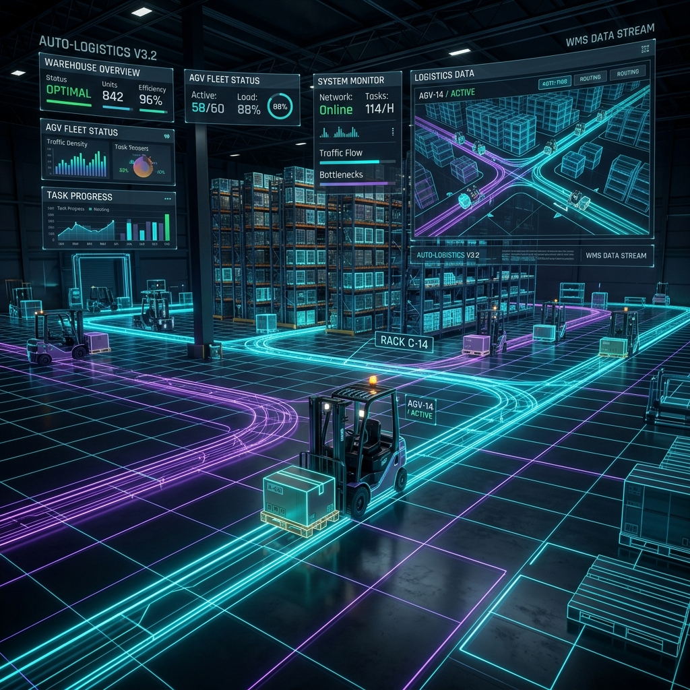

Hệ thống điều khiển xe nâng tự hành dựa trên ngôn ngữ tự nhiên tiếng Việt. AI Agent tự động phân rã tác vụ, lập lộ trình tối ưu và tự sửa đổi kế hoạch khi gặp chướng ngại động, tích hợp lớp kiểm chứng an toàn độc lập.

Kết hợp hoàn hảo giữa giao tiếp ngôn ngữ tự nhiên và tính toán cơ học chính xác để đảm bảo hoạt động kho thông suốt.
Hiểu và phân tích trực tiếp các câu lệnh tự nhiên từ vận hành viên như "Đưa pallet A tới chuyền 3". Không cần lập trình viên can thiệp vào quy trình vận hành hàng ngày.
Sử dụng mô hình ngôn ngữ lớn (LLM) để chia nhỏ yêu cầu thành tối đa 10 bước hành động. Tự động tìm đường A* tránh vật cản tĩnh và thực hiện replan khi phát hiện lối đi bị chặn.
Chống "ảo tưởng hoàn thành" thông qua Oracle độc lập và bộ kiểm soát bất biến trạng thái (Invariants). Khi gặp tình huống không chắc chắn hoặc người đứng kề, robot sẽ dừng và hỏi ý kiến (Human-in-the-Loop).
Minh bạch hóa 100% trace suy nghĩ và hành động của robot, đảm bảo mọi thao tác đều có căn cứ.
Chuyển đổi câu lệnh tiếng Việt tự nhiên thành cấu trúc JSON định nghĩa rõ ràng đối tượng cần chuyển, đích đến và các ràng buộc đi kèm.
Robot quét môi trường để định vị vị trí xe nâng, vật cản, người vận hành và xác định vật thể khớp với yêu cầu của lệnh.
Sinh danh sách hành động (move_to, pick, drop, wait). Agent lần lượt gọi chính xác từng công cụ, cập nhật trạng thái kho theo thời gian thực.
Hệ thống giám sát độc lập kiểm chứng kết quả cuối cùng. Chỉ khi vật được đặt đúng tọa độ và robot đã hạ càng, tác vụ mới được công nhận thành công.
Tuân thủ nghiêm ngặt tính xác định S1-S6 và bất biến trạng thái (Invariants).
Không ảo tưởng hoàn thành nhờ lớp Oracle độc lập chấm điểm thực tế.
Hiệu năng đo lường thực tế đa seed trên mô hình ngôn ngữ cục bộ.
Tốc độ lập kế hoạch tác vụ mức cao (High-level Task Planner).